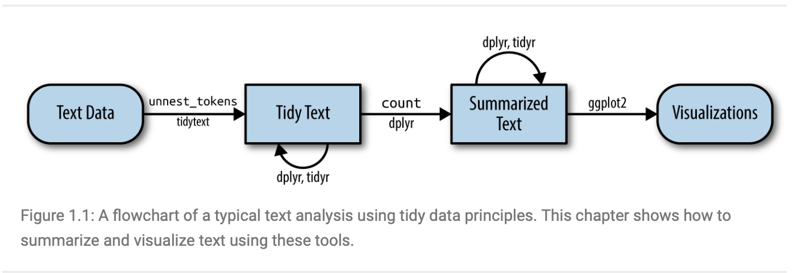
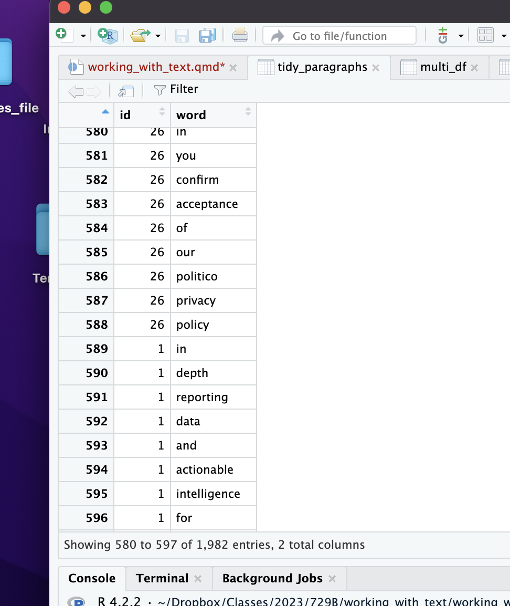

First, install the packages you will likely need to conduct the text analysis.
library(dplyr)
Attaching package: 'dplyr'
The following objects are masked from 'package:stats':
filter, lag
The following objects are masked from 'package:base':
intersect, setdiff, setequal, union
library(tidytext)library(stringr)
Text analysis
In this tutorial we are going to start working with the text that we scraped last time. We will take the tidy approach to text analysis because it is fairly intuitive in that it treats text as data frames for analysis.
Furthermore, the text converted into a data frame can be converted to a variety of formats that allow it to be analyzed by other popular ra programs such as quanteda. While the examples are different and we won’t cover all of the topics in the book you can find much of this material in Text Mining with R: A Tidy Approach listed in the syllabus
This image from Text Mining with R: A Tidy Approach demonstrates the general overall process for text analysis using tidyverse:

A Corpus
For our analysis we need text. The raw text is the corpus that we work on. The corpus that we are interested in varies depending on our research objectives. For example, a corpus can contain a newspaper article, multiple articles, tweets about a particular topic or from a group of people. How we put together the relevant corpus depends on the objective of our analysis.
ADD A SECTION ABOUT CREATING A CORPUS (USING PDFS AND THINGS)
As an example, here we will use the newspaper article that we scraped.
The first step is to load the data that we saved in the last project. It was saved as an R Object, so we can load it the following way:
load("multiple_url_paragraphs.RData")
This loads the saved R data object into our working environment to allow us to begin working with the data. As you can see, it’s loaded as what we saved the object as previously, multi_df.
Cleaning the Data
We now need to work on cleaning the data to render it into a format that we can use for text analysis. For this tutorial, we will be using the tidyverse text analysis method so begin by loading the tidytext package and installing it if not installed yet. This will be one of the core packages needed for our work.
# install.packages("tidytext")library(tidytext)
Now we can begin to work with the data and transform it into something usable.
Begin by tokenizing the data, or separating the paragraphs and sentences into words instead of the format they are currently in.
If we look at tidy_paragraphs, we can see that the text is broken down by word and noted by the paragraph it is found in:

Now we want to begin cleaning the corpus by removing unnecessary words. These are words that convey no meaningful information but appear frequently, usually referred to as “stop words” such as but, and, if, then, and similar words.